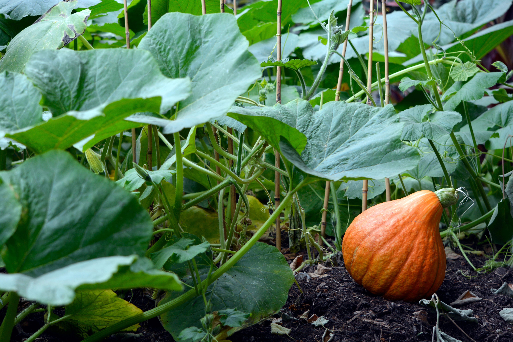

Les potageurs sur Radio Ethic
Les Potageurs développent l’agriculture urbaine sur la Côte d’Azur et le sud de la France en créant des potagers en ville. Sur les toits, les terrasses, en pleine terre, pour les entreprises et les particuliers. Nathalie Orvoën, créatrice des potageurs, au micro de Noël Fantoni
Podcast